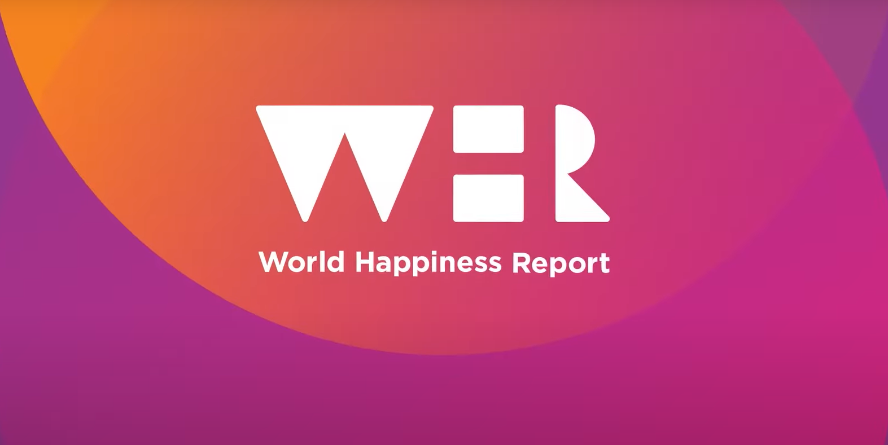

Hello, I'm Prajwal, a Grad student who combines engineering expertise with analytical skills from a Business Analytics background.
My specialization involves using precise engineering and analytical insights to address practical challenges. I'm passionate about
deriving valuable insights from data, aiming to create effective solutions through a blend of engineering creativity and analytical sharpness.
I seek full-time / internship roles starting May 2024.
Lets's engineer insights, one dataset at a time!
SKILLS
- Languages: Python, C++, R, PySpark, SQL
- Visualization: Tableau, PowerBI, Google Analytics, Qliksense
- Databases: MySQL, PostgreSQL, NoSQL
- Libraries: pandas, NumPy, Matplotlib, seaborn scikit, TensorFlow, Keras
- Developer Tools: VS Code, Google Cloud Platform, Git, ServiceNow, Jira, Alteryx, Azure Data Factory, Synapse Analytics, AWS, Databricks, Redshift

Embark on a comprehensive journey through the creation of an End-to-End Azure Data Engineering Project. This project showcases the
development of a robust data platform covering Data Ingestion, Transformation, Loading, and Reporting.
The use case involves ingesting tables from an on-premise SQL Server database
Tech Stack:
- Azure Data Factory (Scalable data storage solution)
- Data Lake Storage Gen2 (Data Visualization)
- Databricks (Transforming raw data into a refined state)
- Synapse Analytics (Loading clean data for advanced analytics)
- Key Vault (Ensuring secure storage and management of sensitive information)
- Azure Active Directory (AAD) (Facilitating authentication and access management)
- Microsoft Power BI(Interactive dashboards for data visualization)

Dive into the intricacies of real estate analytics with my 'Real Estate Price Prediction' project.
Using the Bangalore home prices data, we employ sklearn and linear regression to
construct a robust model. This journey encompasses data science concepts from loading and cleaning
to outlier detection, feature engineering, and hyperparameter tuning.
Tech Stack:
- NumPy, Pandas (Data Cleaning)
- MatplotLib (Data Visualization)
- sklearn (Predictive Model Building)
- Flask (http server)
- HTML, CSS, Javascript (UI)

In response to declining sales and the challenge of comprehending business performance,
the Sales Director of a Hardware company spearheaded a transformative initiative.
The quandary lay in regional managers grappling with data presented in traditional
Excel sheets, prompting a shift towards a more intuitive solution. The visionary decision
to construct a Power - BI Dashboard emerged, aimed at transforming raw data into insightful visual representations
for informed decision-making.
Tech Stack:
- SQL (Data Retrival, Cleaning)
- Power BI (ETL, Data Visualization)

This project focuses on predictive analytics models for breast cancer diagnosis — a practical
learning exercise applying fundamental machine learning concepts. This project rigorously evaluates and
justifies results, creating detailed Jupyter Notebooks that document the entire thought process, from problem
identification to the application of Logistic Regression and advanced Neural Network techniques.
Tech Stack:
- NumPy, Pandas (Data Cleaning, Manipulation)
- MatplotLib, Seaborn (Data Visualization)
- Logistic Regression, Neural Network (Predictive Model Building)

Explored global happiness through the World Happiness Report, using Gallup World Poll data and the Cantril ladder. Introduced the concept of Dystopia,
delved into residuals, and uncovered unique nuances in each country's happiness narrative. The analysis weaves a compelling narrative,
revealing interconnected threads of joy and providing insight behind the numbers.
Tech Stack:
- NumPy, Pandas (Data Cleaning, Manipulation)
- MatplotLib, Seaborn (Data Visualization)
- Microsoft Excel - BiVariate, Multivariate Analysis; Regression Analysis; Forecasting (Regression Model Building)

Embark on a journey into web scraping with Python and the BeautifulSoup library through this tutorial, delving into the intricacies of extracting valuable information from news websites.
The comprehensive project covers setting up your Python environment, understanding HTML structure, and crafting an efficient Python script and deploying it in AWS EC2 instance
Tech Stack:
- NumPy, Pandas (Data Cleaning, Manipulation)
- Requests, BeautifulSoup (Webscrapping, HTTP Requests)
- Amazon EC2 (Program Deployment)